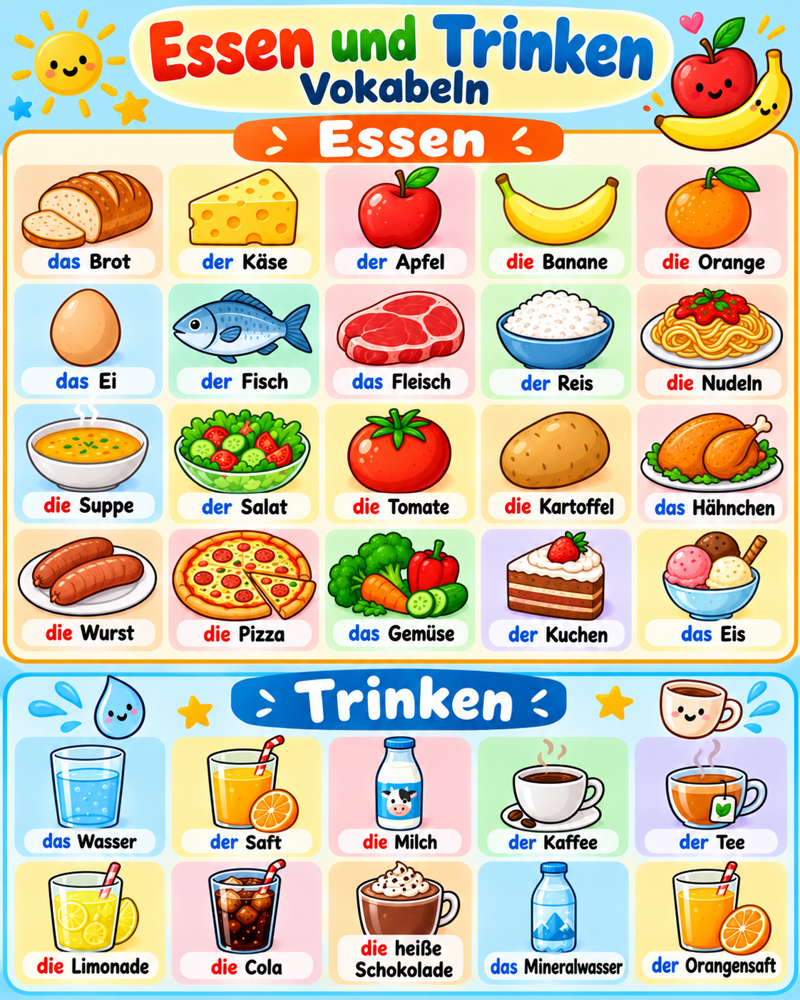

🍎 Essen und Trinken – Vokabeln
Klicke auf eine Vokabelkarte im Bild und höre die deutsche Aussprache.

Bereit zum Lernen!
Die Aussprache verwendet die deutsche Stimme deines Browsers oder Geräts. Für die Tonwiedergabe muss eine deutsche Sprachstimme verfügbar sein.